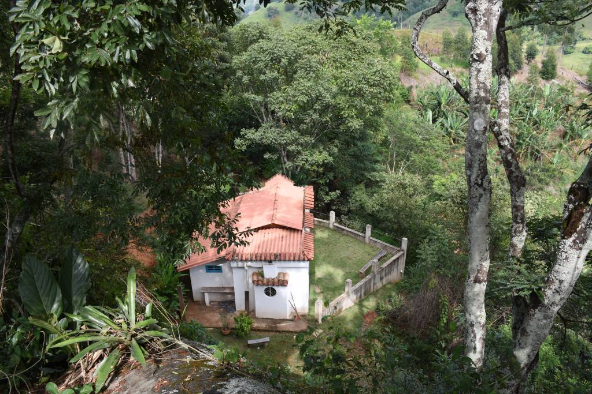
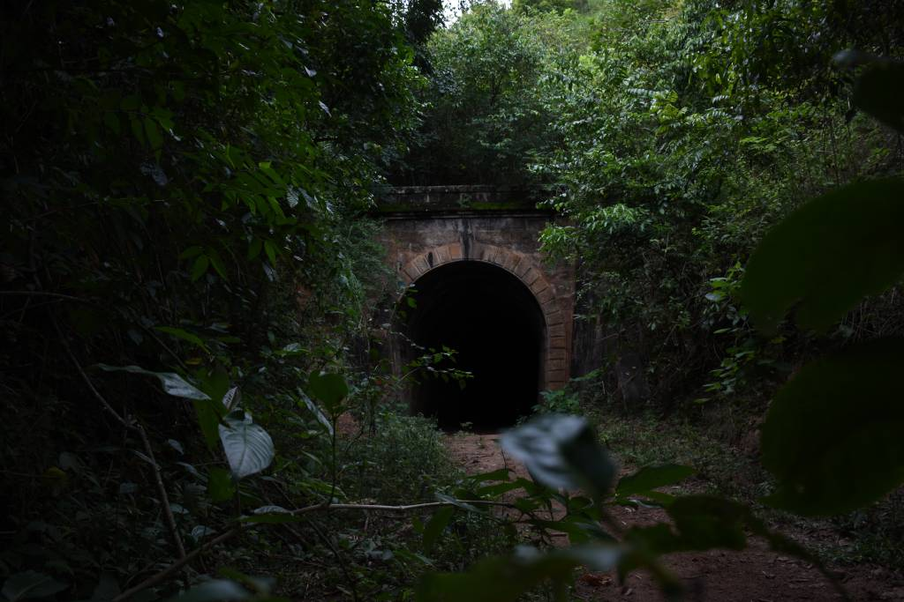
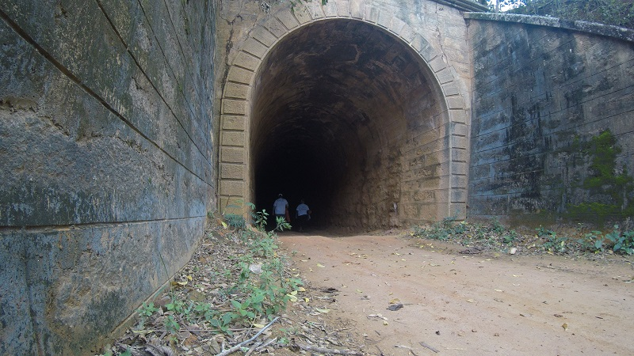

Sítio Santa Clara

Há trilhas, Rapel com acompanhamento e todos os cuidados, vista panorâmica do nosso município, o sítio tem sido adaptado cultura agroecológica e sustentável.
Há trilhas, Rapel com acompanhamento e todos os cuidados, vista panorâmica do nosso município, o sítio tem sido adaptado cultura agroecológica e sustentável.
veja a localização:
Túnel Triúnfo

O túnel fazia parte do trecho ferroviário da antiga Leopoldina Railway, que cortava o município de Alegre. Possui 180m de extensão, aproximadamente 06m de altura e foi construído com pedras sobrepostas. Na parte superior interna é possível perceber as marcas da fuligem que eram liberadas pela Maria Fumaça. Logo na entrada lê-se a data de 12/07/1915,referindo-se à data de inauguração do local.
Têm-se informações que mesmo antes desta data, já por volta de 1905, havia passagens de trens por esse trecho.
Saiba mais:
Túnel dos Ingleses de Cima

Contemplação e travessia de túnel.
O túnel fazia parte do trecho ferroviário da antiga Leopoldina Railway, que cortava o município de Alegre. Possui 180m de extensão, aproximadamente 06m de altura e foi construído com pedras sobrepostas. Na parte superior interna é possível perceber as marcas da fuligem que eram liberadas pela Maria Fumaça.
Logo na entrada lê-se a data de 12/07/1915, referindo-se à data de inauguração do local. Têm-se informações que mesmo antes desta data, já por volta de 1905, havia passagens de trens por esse trecho.
Veja a localização: